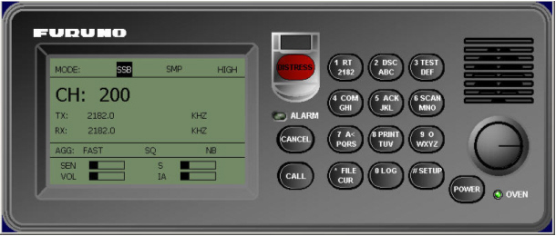

Guía rápida para Radioteléfono VHF

Si el simulador no se dispone de equipo real de VHF, las comunicaciones se realizan mediante el panel de VHF de la Pantalla de Control de Equipos. Para trabajar con mayor comodidad, se puede ampliar el panel haciendo clic con el ratón en cualquier zona del mismo que no corresponda a un control.
Fonía
Procedimiento para estable align=centercer comunicación radio (fonía) ente dos unidades.
- Encender el equipo VHF de las unidades (Triana y Gernika) girando el botón VOLUME hacia la derecha.
- Seleccionar el mismo canal en las dos unidades girando el botón CHANNEL.
- Utilizar los teléfonos de las dos unidades para hablar por el canal radio seleccionado teniendo en cuenta que hay que pulsar el PTT para hablar.
Nota: Si el simulador dispone de teléfonos reales, la comunicación radio se realiza a través de estos teléfonos. Si no hay teléfonos reales, se utiliza el panel de teléfono de la Pantalla de Control de Equipos para pulsar el PTT y los auriculares y micrófono conectados al PC de la consola para escuchar y hablar.
Comunicación DSC

Funcionamiento básico:
- El equipo se enciende girando el botón VOLUME hacia la derecha. Al encenderlo se muestra la pantalla de espera.
- Para volver a esta pantalla se pulsa la tecla CANCEL las veces que haga falta.
- La configuración del equipo se realiza mediante el menú Set Up que se muestra al pulsar la tecla SELECT cuando el equipo está mostrando la pantalla de espera.
- Pulsando las teclas < y > del teclado del equipo se puede seleccionar las opciones disponibles que son las que aparecen en la línea inferior. Al seleccionar una opción, ésta aparece en la línea superior entre los signos < y >. Para aceptar la opción elegida se pulsa la tecla ENT. Las opciones elegidas pueden mostrar más opciones que se seleccionan de la misma manera.
- La preparación de mensajes se realiza pulsando la tecla ENT cuando el equipo está mostrando la pantalla de espera. A continuación se solicitan los datos del mensaje. Cada dato solicitado se muestra seguido de un signo de interrogación ?, este signo indica que hay una lista de opciones para este dato. Las opciones aparecen cuando se pulsa la tecla SELECT y se seleccionan de la misma manera que en el menú Set Up.
- El equipo se apaga girando a la izquierda el botón VOLUME hasta la posición OFF.


Acuse de recibo de un mensaje DSC recibido:
- El botón AUTOACK (2 en el teclado numérico) sirve para seleccionar el modo de acuse de recibo, que puede ser manual o automático. Al pulsar el botón se intercambia entre un modo y otro.
- Cuando se selecciona modo automático, hay que seleccionar si la respuesta es ABLE o UNABLE. Pulsar la tecla SELECT para presentar el menú de configuración (Set up), y seleccionar la opción 2.
- Se muestra un nuevo menú:
- Si se elige UNABLE se muestra otro menú para seleccionar la razón.
- La opción elegida se muestra en la línea inferior de la pantalla de espera.


| Opción | Línea inferior |
| Manual | normal |
| Automático (ABLE) | Ack ABLE |
| Automático (UNABLE) | Ack UNABLE |

Procedimiento para enviar y recibir mensajes DSC con el equipo VHF:
- Encender el equipo VHF de dos unidades (Triana y Gernika).
- En la unidad Triana seleccionar acuse de recibo automático.
- En la unidad Gernika pulsar la tecla ENT; se muestra la siguiente pantalla.
- La interrogación indica que hay un menú de opciones disponible. Pulsar la tecla SELECT para abrir el menú y seleccionar un formato, por ejemplo INDIVIDUAL.
- Pulsar ENT para continuar. En la pantalla irán apareciendo las peticiones de todos los datos necesarios para preparar el mensaje. Introducir los datos que se especifican en la tabla.
- Pulsar el botón CALL para enviar el mensaje.
- En la pantalla de la unidad Gernika se recibe el Ack enviado de forma automática por Triana.

| Datos pedidos | Opción seleccionada |
| Address | 224000003 |
| Category | ROU (Routine) |
| Telecom1 | SMP (Simplex TP) |
| Telecom2 | SMP (Simplex TP) |
| Channel | 0006 |
Mensajes de Socorro
Procedimiento para realizar llamadas DSC de socorro:
- Encender el equipo VHF de dos unidades (Triana y Gernika) y una costera (Cádiz) girando el botón VOLUME hacia la derecha.
- Pulsando el botón AUTOACK (botón 2 del teclado numérico) se selecciona el modo de acuse de recibo que puede ser manual o automático. Para los mensajes de DISTRESS da igual que se seleccione manual o automático ya que la respuesta siempre tiene que ser manual.
- En el equipo VHF de una de las unidades pulsar el botón DISTRESS y mantenerlo pulsado al menos durante 4 segundos. El equipo enviará mensajes de socorro de forma repetitiva con un intervalo de repetición configurable, hasta que reciba el ACK.
- En la pantalla del equipo de la otra unidad y de la costera se recibe el mensaje de socorro enviado, suena una alarma sonora y se encienden los indicadores luminosos superiores del botón ALARM STOP.
- Pulsar el botón ALARM STOP en la costera y en la unidad para silenciar la alarma sonora.
- En el equipo VHF de la costera pulsar el botón ENT varias veces para ver el contenido del mensaje hasta llegar a la ventana de reconocimiento de la llamada (Acknowledge call).
- Cuando aparezca la ventana de reconocimiento de la llamada pulsar de nuevo la tecla ENT. En esta ventana aparece por defecto seleccionada la opción
, en cualquier caso, si no es así se puede seleccionar esta opción pulsando las teclas < y > del teclado del equipo y a continuación pulsar ENT para aceptar. - Aparecerá la siguiente información en la ventana:
- Pulsar el botón CALL para enviar el mensaje y aparecerá:
- En la unidad que envió el mensaje de DISTRESS se recibe el ACK de la costera y se para el envío de mensajes.
- La unidad que envió el mensaje de DISTRESS y la costera cambian automáticamente el canal de la radio al 16, para estable align=centercer la comunicación telefónica por este canal.


Radioteléfono MF

Si el simulador no se dispone de equipo real de MF, las comunicaciones se realizan mediante el panel de MF de la Pantalla de Control de Equipos. Para trabajar con mayor comodidad, se puede ampliar el panel haciendo clic con el ratón en cualquier zona del mismo que no corresponda a un control.

Fonía
Procedimiento para estable align=centercer comunicación radio (fonía) ente dos unidades:
- Encender el equipo MF de las dos unidades pulsando el botón POWER.
- Seleccionar el mismo canal en las dos unidades. El procedimiento para sintonizar el canal es el siguiente:
- Girar el selector situado sobre el botón POWER para desplazar la marca de selección por la pantalla y seleccionar un número de canal.
- Sin cambiar la posición, presionar el selector para mostrar la ventana de edición del canal.
- El número de canal se puede introducir directamente con las teclas numéricas o usando el botón selector.
- Con las teclas numéricas: entrar la banda y el canal y pulsar el selector para aceptar el valor.
- Con el botón selector:
- Usar la tecla [FILE/CURSOR] para situar el cursor en la posición correspondiente a la banda o en la del canal, según lo que se quiera cambiar.
- Estable align=centercer la banda o el canal girando el botón selector.
- Pulsar el botón selector para aceptar el valor; se presentan las frecuencias Tx/Rx del canal estable align=centercido.
- Utilizar los teléfonos de las dos unidades para hablar por el canal radio seleccionado teniendo en cuenta que hay que pulsar el PTT para hablar.


Nota1: En el equipo software el procedimiento para manejar el selector es el siguiente:
- Situar el cursor sobre el indicador del selector.
- Presionar el botón derecho del ratón y arrastrar el indicador alrededor del selector para desplazar la marca de selección por la pantalla, de campo en campo.
- Cuando la marca se sitúe en el campo elegido, soltar y volver a pulsar el botón derecho del ratón (sin cambiar la posición del cursor) para abrir menú o aceptar la selección:
- Si se abre un menú, sin soltar el botón, arrastrar el indicador alrededor del selector para desplazar la marca de selección por el menú.
- Para aceptar la selección dejar el botón pulsado hasta que se cierre el diálogo y la opción seleccionada aparezca en el campo correspondiente.
Nota 2: Si el simulador dispone de teléfonos reales, la comunicación radio se realiza a través de estos teléfonos. Si no hay teléfonos reales, se utiliza el panel de teléfono de la Pantalla de Control de Equipos para pulsar el PTT y los auriculares y micrófono conectados al PC de la consola para escuchar y hablar.
Comunicación DSC
Funcionamiento básico
- El equipo se enciende y se apaga pulsando el botón POWER.
- La presentación de espera DSC se abre pulsando la tecla 6 SCAN. Esta presentación muestra:
- Las frecuencias que el equipo está escaneando.
- El tipo de acuse de recibo seleccionado (manual o automático).
- La posición de la unidad.
- La hora actual del ejercicio.
- Las frecuencias que el equipo escanea se pueden estable align=centercer pulsando el botón SETUP y seleccionando la opción SCAN FREQUENCIES. La selección de las frecuencias se lleva acabo mediante el botón selector, como se describe en el apartado anterior (Fonía).
- Desde la presentación de espera DSC, pulsando la tecla 5 ACK se intercambia entre modo automático y manual. En la presentación de espera DSC se puede ver el modo seleccionado.

Acuse de recibo automático de un mensaje DSC recibido:
- El acuse de recibo automático se configura pulsando el botón SETUP y seleccionando la opción AUTO ACK. Pulsando y girando el selector se puede elegir entre las siguientes opciones:
- Comply Type →
- ABLE
- UNABLE →
- UNABLE REASON →
- NO REASON
- BUSY
- EQUIP DISABLED
- MODE NOT USABLE
- CH NOT USABLE
Procedimiento para enviar y recibir mensajes DSC con el equipo MF
- Encender los equipos MF de dos unidades (Triana y Gernika).
- En el equipo MF de la unidad a la que se va e enviar el mensaje (Triana ):
- Añadir la siguiente frecuencia 6MHZ INTL: T 6312.5/6331.0. a la lista de frecuencias de rutina que escanea el equipo.
- Seleccionar acuse de recibo manual.
- En el equipo MF de la unidad que va a enviar el mensaje (Gernika):
- Pulsar el botón 2 DSC y a continuación el botón selector para abrir el menú CALL TYPE.
- Seleccionar INDIVIDUAL girando el botón selector y pulsar dicho botón para confirmar.
- Seleccionar STATION ID girando el botón selector y pulsar dicho botón para mostrar una ventana de introducción de datos, con las teclas numéricas introducir el ID de la estación a la que se envía el mensaje (Unidad Triana ID 224000003).
- Seleccionar PRIORITY girando el botón selector y pulsar dicho botón para abrir el menú de opciones.
- Seleccionar la opción ROUTINE girando el botón selector y pulsar dicho botón para confirmar.
- Seleccionar la opción COM.TYPE girando el botón selector y pulsar dicho botón para abrir el menú de opciones.
- Seleccionar la opción TELEPHONE girando el botón selector y pulsar dicho botón para confirmar.
- Seleccionar la opción COM.FREQ girando el botón selector y pulsar dicho botón para abrir el menú de opciones.
- Seleccionar la opción CHANNEL girando el botón selector y pulsar dicho botón para mostrar una ventana de introducción de datos. Introducir el canal de comunicación que se usará para hablar por la radio (por ejemplo 200).
- Seleccionar la opción DSC.FREQ girando el botón selector y pulsar dicho botón para abrir el menú de opciones.
- Seleccionar la frecuencia 6MHZ INTL: T 6312.5/6331.0.
- Pulsar el botón CALL para enviar la llamada. En la pantalla aparece el mensaje "Individual request call in progress!".
- Al término de la transmisión, en la pantalla aparece el mensaje "Waiting for acknowledgement" y se inicia una cuenta atrás para esperar el acuse de recibo.
- En el equipo MF de la unidad que recibe el mensaje (Triana):
- La pantalla muestra el mensaje "Individual request call received" y suena la alarma. Al pie de la pantalla aparecen dos opciones, ANSWER y ALL VIEW.
- Pulsar Cancel para parar la alarma.
- Con el botón selector seleccionar ALL VIEW para ver el contenido del mensaje.
- Girar de nuevo el botón selector y seleccionar ANSWER, pulsar el selector para abrir el menú de opciones y seleccionar ABLE.
- Pulsar el botón CALL para enviar el acuse de recibo. En la pantalla aparece el mensaje "Able acknowledge call in progress!".
- Una vez enviada la respuesta la radio se sintoniza en el canal que se estable align=centerció en el mensaje.
- En el equipo MF de la unidad que envió el mensaje (Gernika):
- La pantalla muestra el mensaje "Able acknowledge call received". El canal seleccionado en el mensaje se sintoniza automáticamente en la radio.

Navtex NX-300

Para trabajar con mayor comodidad, se puede ampliar el panel haciendo clic con el ratón en cualquier zona del mismo que no corresponda a un control.
Procedimiento para enviar y recibir mensajes Navtex:
- Encender el equipo Navtex de la unidad receptora (Gernika) pulsando el botón PWR.
- En la consola del instructor seleccionar el menú Archivo → Emisor Navtex de la Pantalla de Control de Equipos para mostrar la ventana de envío de mensajes Navtex.
- Introducir en esta ventana los siguientes datos:
- Identificador del mensaje (en el primer campo de la parte derecha).
- Tipo de mensaje (en el campo contiguo al identificador). Elegir en la lista que se despliega.
- Texto del mensaje (en el área de edición situada bajo el identificador y el tipo).
- Elegir la Navarea en la que se encuentre la unidad receptora.
- Elegir una estación emisora.
- Elegir cualquier prioridad.
- Pulsar el botón Enviar.
- En el equipo Navtex de la unidad receptora (Gernika), el botón Display permite intercambiar la pantalla de datos de navegación, que muestra los datos de navegación del buque y la pantalla de presentación de mensajes recibidos. Pulsar este botón para mostrar la lista de mensajes.
- En la lista de mensajes debe aparecer los siguiente mensajes AC0X y NEW, donde:
- Seleccionar el mensaje recibido pulsando las fechas arriba y abajo del botón de selección.
- Una vez seleccionado pulsar el botón ENT para ver el contenido del mensaje.
- Pulsar el botón MENU del equipo Navtex. Con las flechas arriba y abajo del botón de selección, seleccionar la opción SELECCION ESTACION y pulsar ENT.
- Seleccionar MANUAL y pulsar ENT. Se mostrará la lista de estaciones en las que se puede a su vez elegir RECIBIR o IGNORAR. Seleccionar la estación A con la opción IGNORAR. Pulsar ENT para confirmar.
- Desde la ventana del Emisor Navtex del instructor, enviar otro mensaje seleccionando la estación A. Este mensaje no se recibirá en el equipo Navtex de Gernika .

Ejemplo, considerando Gernika como unidad receptora:
| Identificador del mensaje | cualquiera |
| Tipo de mensaje | C |
| Texto del mensaje | cualquiera |
| Navarea | II |
| Estación emisora | A: Cádiz |
| Prioridad | cualquiera |
| Pantalla de Datos de Navegación | Pantalla de Mensajes Recibidos |
 |
 |
A indica la estación emisora
C indica es tipo de mensaje enviado
XX es el identificador numérico del mensaje entre 01 y 99.

El contenido del mensaje muestra unos códigos de inicio (ZCZC) y fin (NNNN) de mensaje, el identificador del mensaje, la hora de envío y el texto.


Radiogoniómetro

Para trabajar con mayor comodidad, se puede ampliar el panel haciendo clic con el ratón en cualquier zona del mismo que no corresponda a un control.
Seleccionar el sector de escucha del radiogoniómetro
- Encender el equipo pulsando el botón PWR.
- Pulsar el botón MENU, para mostrar el menú de configuración del equipo. Con las teclas arriba y abajo del botón de selección, seleccionar Detection Mode y pulsar el botón ENT.
- Se mostrarán dos opciones Automatic y Manual; con las flechas del botón de selección, seleccionar Manual. Pulsar ENT para confirmar.
- Pulsar el botón DISP para volver a la pantalla de exploración del equipo. La orientación del sector de exploración se puede modificar de forma manual con las teclas derecha e izquierda del botón de selección.

Activar y desactivar frecuencias
- Pulsar el botón MENU, para mostrar el menú de configuración del equipo. Con las teclas arriba y abajo del botón de selección, seleccionar Frequencies y pulsar el botón ENT. Se mostrará la lista de frecuencias.
- Para activar o desactivar cualquiera de las frecuencias de la lista, se desplaza la marca de selección con las teclas arriba, abajo, izquierda y derecha del botón de selección hasta situarla en el campo de estado de la frecuencia elegida, se pulsa el botón ENT y con las teclas derecha e izquierda se muestran los dos estados posibles Active y No Active. Pulsar de nuevo ENT para confirmar el estado.

Detección de las comunicaciones en el radiogoniómetro.
- Encender el equipo de la unidad Triana pulsando el botón PWR.
- Seleccionar modo de detección Manual.
- Pulsar los botones CH16, 2182 y EPIRB para seleccionar de forma automática la recepción de las frecuencias de socorro.
- Orientar el sector en la dirección de la unidad Gernika.
- Encender la radio VHF de la unidad Gernika, sintonizar el canal 16 y pulsar el PTT del teléfono.
- En el radiogoniómetro de la unidad Triana aparece la demora correspondiente sobre el gráfico (línea blanca), y el valor numérico de dicha demora aparece a la izquierda bajo la frecuencia.
- Lanzar una boya SART desde la unidad Gernika haciendo clic sobre su icono en la Pantalla de Control de Equipos.
- En el radiogoniómetro de la unidad Triana aparece la demora correspondiente sobre el gráfico (línea roja), y el valor numérico de dicha demora aparece a la izquierda bajo el texto SART. Esta línea aparece sea cual sea el sector de detección del equipo.
- Lanzar una boya EPIRB-406 desde la unidad Gernika haciendo clic sobre su icono en la Pantalla de Control de Equipos.
- En el radiogoniómetro de la unidad Triana aparece la demora correspondiente sobre el gráfico (línea azul), y el valor numérico de dicha demora aparece a la izquierda bajo la frecuencia 121.500 MHz.


Terminal NBDP

Llamada Manual
Procedimiento para estable align=centercer una llamada manual entre dos unidades con el terminal NBDP:
- En primer lugar hay que encender la radio MF de las dos unidades en modo Telex como se especifica a continuación:
- Encender la radio MF de las dos unidades (Triana y Gernika), pulsando el botón POWER.
- Girar el selector situado sobre el botón POWER para desplazar la marca de selección por la pantalla y seleccionar el primer campo de la línea MODE: (el que aparece marcado en la figura).
- Sin cambiar la posición, presionar el selector para mostrar los modos posibles.
- Girar de nuevo el selector para seleccionar TLX y presionar (sin cambiar la posición) para aceptar el modo TLX.
- Encender el terminal NBDP de las dos unidades (Triana y Gernika) pulsando el botón PWR y aparecerá la pantalla de espera con el menú principal.
- Cambiar en ambas unidades el modo de recepción de mensajes a ARQ:
- Seleccionar con el cursor la opción Manual Reception del menú Operate.
- En la ventana que se muestra seleccionar YES y pulsar la tecla Enter.
- En la ventana Comm Mode seleccionar ARQ con las teclas de flecha y pulsar la tecla Enter.
- Definir una unidad como receptora y otra como transmisora:
- Unidad Receptora - seleccionar con el cursor la opción Manual Calling del menú Operate y en la ventana que se muestra seleccionar el modo IRS e introducir el número SellCall de la unidad trasmisora.
- Unidad Trasmisora - seleccionar con el cursor la opción Manual Calling del menú Operate y en la ventana que se muestra seleccionar el modo ISS e introducir el número SellCall de la unidad receptora.
- Una vez definidas las unidades receptora y transmisora, se estable align=centerce comunicación entre ellas, de manera que en el área de edición de la pantalla de la unidad receptora se muestra el texto que se escribe desde el área de edición de la unidad transmisora.
- Cuando el emisor teclea +?, la unidad receptora pasa a ser transmisora y viceversa.
- Para terminar la comunicación se pulsa la opción de menú Break o la tecla F10.


Nota: El procedimiento para mover el selector del equipo software se describe en la Nota1 del apartado Radioteléfono MF / Fonía.


Ejemplo:
| Unidad Receptora - Gernika | Mode: IRS ID: 08003 |
| Unidad Emisora - Triana | Mode: ISS ID: 08002 |
Inmarsat A B

Para trabajar con mayor comodidad, se puede ampliar el panel haciendo clic con el ratón en cualquier zona del mismo que no corresponda a un control.
Teléfono Inmarsat
Procedimiento para realizar una comunicación telefónica entre dos unidades con el Inmarsat-B:
· Encender el télex Inmarsat B de las dos unidades (Triana y Gernika) pulsando el botón PWR y comprobar que hay señal de antena. El nivel de señal se representa con asteriscos y varía desde 0 (sin señal) hasta 8 (nivel máximo). · Comprobar que la pantalla del teléfono se enciende mostrando el texto Ready. · La unidad que va a llamar debe descolgar su teléfono real o pulsar en el mimético y a continuación marcar el número de la unidad a la que se quiere llamar, con el siguiente formato: LLL SS RRR nnnnnnnnn # LLL Código de la LES a través de la que se realiza la llamada SS Código de Servicio RRR Código de región oceánica en la que se encuentra la MES llamada Nnnnnnnnn Número de teléfono al que se desea llamar # Código de fin de marcación Ejemplo: Gernika llamando a Triana a través de Cádiz Marcar 14200871322430003# · En la pantalla el teléfono del receptor, aparece una indicación de llamada entrante mostrando el texto Receiving. · Descolgar el teléfono del receptor para estable align=centercer la comunicación. En la pantalla del teléfono de las dos unidades aparecerá Communication. Nota: Si el simulador sólo dispone de una tarjeta de red, para que se escuche la comunicación hablada hay que seleccionar la opción Inmarsat en la barra superior de la Pantalla de Control de Equipos. Cuando esta opción está seleccionada, el led asociado aparece iluminado en verde. · Colgar el teléfono de la unidad que estable align=centerció la llamada para terminar la comunicación. 8.2. Télex Inmarsat Procedimiento para realizar una comunicación télex entre dos unidades con el Inmarsat B: Pantalla del Inmarsat B · Encender el télex Inmarsat B de las dos unidades (Triana y Gernika) pulsando el botón PWR y comprobar que hay señal de antena. El nivel de señal se representa con asteriscos y varía desde 0 (sin señal) hasta 8 (nivel máximo). · Encender el télex Inmarsat B de la costera a través de la cual se va a estable align=centercer la comunicación (el Inmarsat de las costeras está encendido por defecto). · Seleccionar el menú Telex. · Conectar con la estación costera como se describe a continuación: - Seleccionar la opción Call LES del menú Telex para mostrar la ventana Call LES. - En el campo LES Access Code de la ventana, elegir la costera. - No es necesario introducir el código de servicio. - Pulsar la tecla Enter. Ejemplo: LES Access Code 142(CÁDIZ) · Una vez estable align=centercida la conexión con la costera, se muestra el área de edición del Telex. · A continuación del texto que aparece automáticamente, escribir el número del equipo con el que se quiere conectar, con el siguiente formato: SS RRR nnnnnnnnn + SS Código de Servicio RRR Código de región oceánica en la que se encuentra la MES llamada Nnnnnnnnn Número de teléfono al que se desea llamar + Código de fin de marcación Ejemplo: Gernika llamando a Triana a través de Cádiz Marcar 00581322430000+ · En la unidad llamada se mostrará también el área de edición del telex. · Todo lo que se escriba desde cualquiera de los dos equipos conectados aparecerá también en el área de edición del otro equipo. · Para terminar la comunicación pulsar la opción de menú Break o la tecla F10.Inmarsat C
9.1. Envío de Mensajes Procedimiento para realizar una comunicación entre dos unidades con el Inmarsat-C: Pantalla del Inmarsat C · Encender el télex Inmarsat C de las dos unidades (Triana y Gernika) pulsando el botón PWR y comprobar que hay señal de antena. · En los equipos de las dos unidades seleccionar la opción Ocean Region del menú Options. · En la lista que se muestra seleccionar Auto. · Hacer login en los dos equipos seleccionando la opción Login del menú Options. · En uno de los equipos seleccionar la opción Transmit Message del menú Transmit. · Comprobar que se muestra la ventana Transmit Message y el campo en LES Id aparece la estación por defecto (en el ejemplo: Cádiz). · En el campo Message File hacer clic y elegir uno de los mensajes de la lista. · En el campo Country/Ocean Code introducir el código de la región oceánica correspondiente. · En el campo Station ID introducir el IMN del Inmarsat-C del equipo al que se va a enviar el mensaje, seleccionar [TRANSMIT] y pulsar la tecla Enter para efectuar el envío. Ejemplo: Enviar mensaje desde Gernika a Triana LES Id : Cádiz Country/Ocean : 581 Station ID : 422430000 · Si el envío ha ido bien en la unidad receptora se muestra la lista de mensajes recibidos. Seleccionar el mensaje y pulsar la tecla Enter para leerlo. · Para abandonar las pantallas de edición y la lista de mensajes pulsar la tecla Esc. · Para consultar los mensajes recibidos en el equipo seleccionar la opción Receive Message Log del menú Logs. · Para consultar los mensajes enviados desde el equipo seleccionar la opción Send Message Log del menú Logs.